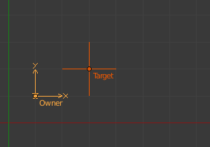
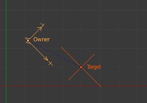
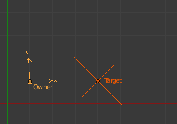

Child Of Constraint 子级约束¶
Child Of（子级） 是两个物体之间的标准的父子关系约束 (在三维视图中可以通过快捷键 Ctrl-P 来创建)。
与传统方法相比，父子约束具有几个优点和增强功能：
同一物体你可以有几个不同的父级（用 Influence影响 滑块加权各自的影响）。
与任何约束一样，你可以为其影响( Influence)设置设置关键帧（即动画）。这允许子级约束的物体随着父级目标物体的时间变化而变化，因此影响子级约束的物体。
Important
不要将这个 "基本" 物体父级和骨架里面的 chains of bones 混淆。该约束用于将一个物体的父级设置到骨骼(所谓的 object skinning), 甚至骨骼到骨骼。但不要试图用它来定义骨骼链。
Options 选项¶
Child Of panel. 子级面板。
- Target 目标
- 此物体将充当子物体的目标物体。 数据ID 用于选择约束目标， 当它为无（none）时不起作用（红色状态）。
- 位置 X, Y, Z
- 这些按钮中的每一个将使父级影响或不影响沿相应轴的位置。
- 旋转 X, Y, Z
- 这些按钮中的每一个将使父级影响或不影响围绕相应轴的旋转。
- 缩放 X, Y, Z
- 这些按钮中的每一个将使父级影响或不影响沿相应轴的缩放。
- Set Inverse 设置反向
- 默认情况下，当你将你的目标作为你的自身父级，目标将成为自身空间的原点。这意味着自身的位置、旋转和缩放均由目标的相同属性所偏移。换言之，当你将目标作为自身父级时，自身将被变换。这可能是不需要的！所以，如果你想恢复你的自身到它的父子关系状态前，点击 设置反向 按钮。
- Clear Inverse 清除反向
- 此按钮反转（取消）上述的影响，恢复自身/子级到关于其目标/父级的默认状态。
Tips 小贴士¶
使用此约束创建新的父关系时，通常需要在指定父节点后单击 Set Inverse（设置反向） 按钮。如上所述，这取消父级任何不需要的变换，因此，自身返回位置/旋转/缩放约束应用之前。请注意，你应该将应用 Set Inverse（设置反向） 为特定 Child Of（子级） 约束取消所有其它们约束（其 Influence（影响） 设置为0），在转换目标/父级之前（见下面的例子）。
关于控制哪些目标（即父级）个别的变换属性影响自身的切换按钮，通常最好将其全部启用，或禁用所有三个给定的位置，旋转或缩放变换。
Technical Note 技术说明¶
如果你在所有通道上使用此约束，它将为父子关系使用一个直矩阵乘法的。不父矩阵分解为loc/rot/size。这样可以确保正确地应用任何转换，也适用于旋转和非均匀缩放的父级的组合。
Examples 示例¶

No constraint. 没有约束。
注意自身空物体的位置为沿X轴和Y轴1.0 BU。
|

刚刚增加了子级约束。
在这里你可以看到，自身空物体现在是沿X和Y轴远离target_1空物体1.0 BU（一个Blender单位）。
|

偏移设置。
设置反向（Set Inverse）已被点击，自身返回到原来的位置。
|

目标/父级的变换。
Target_1 ，围绕 Z轴旋转，和沿着它的局部X轴缩放，被翻转在XY平面。
|

Offset cleared. 清除的偏移量。
清除反向(Clear Inverse)已被点击。自身再次完全由Target_1控制。
|

Offset set again. 再次设置偏移。
设置反向（Set Inverse）已被再次点击，正如你所看到的，它没有给出相同的结果（目标/父级变换）如上所述，使用设置反向（Set Inverse）只有一次，在你的目标/父级变换之前。
|